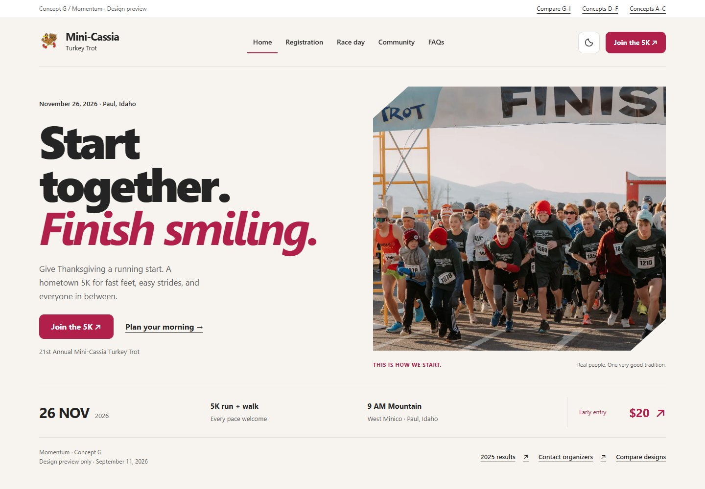

G. Momentum
Bold athletic typography, an angled race photograph, and a strong sense of forward motion. High energy, without the visual noise.
Explore Momentum ↗The most energetic direction. A confident race identity that still welcomes walkers.